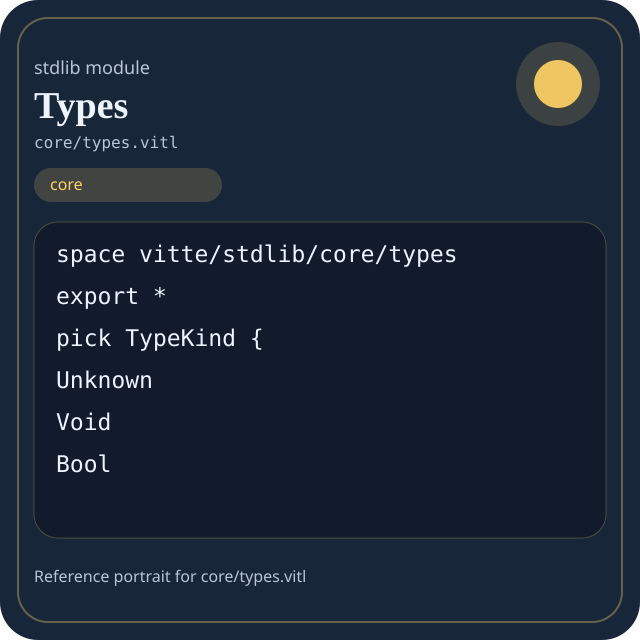

Stdlib module core/types.vitl
This page is a wiki-style reference for one concrete stdlib file. It explains what the file owns, where it fits in the family, and how to decide whether this is the right surface to depend on.

core/types.vitl.Family: core
Kind: public stdlib surface
Page style: this reference follows the same “encyclopedic card + portrait + usage contract” logic as the keyword pages, but for stdlib modules.
Summary
Overview
| Field | Value |
|---|---|
| Path | core/types.vitl |
| Family | core |
| Kind | public stdlib surface |
| Line count | 393 |
| Declared procedures | 33 |
| Declared forms/picks | 5 |
`core/types.vitl` is a public stdlib surface inside the `core` family. It should be read as one focused slice of the broader family responsibility: Portable low-level building blocks: types, strings, memory helpers, panic/runtime-adjacent basics, and reusable utility routines.
Purpose
This file should be chosen because of responsibility, not because its name “sounds close enough”. Inside the core family, it carries one focused part of the contract and keeps that responsibility separate from neighboring concerns.
- A manifest validator stores names and counters with `core` types.
- A pure helper normalizes a string or integer without touching host state.
- The same helper can be reused in compiler code, stdlib code, and user code.
Top-level API inventory
| Surface | Items |
|---|---|
| Procedures | type_field, type_parameter, type_info, type_check_result, void_type, bool_type, char_type, string_type, i32_type, i64_type, u32_type, u64_type |
| Forms | TypeField, TypeParameter, TypeInfo, TypeCheckResult |
| Picks | TypeKind |
| Constants | none declared at top level |
Imported surfaces
This file does not advertise a top-level `use` surface in its opening declarations. That often means it is either self-contained or an aggregation layer.
How to use this module
Start by reading the file as an ownership boundary. Ask three questions: what enters this module, what stable types or procedures it exports, and what adjacent module should stay outside of it.
- Open the family page first to understand why this area of the stdlib exists.
- Read the source excerpt below to see the namespace, imports, and first declared surfaces.
- Check the neighbor list to avoid coupling this module with an adjacent responsibility by habit.
Source shape
space vitte/stdlib/core/types
export *
pick TypeKind {
Unknown
Void
Bool
Char
String
Int
FloatThe excerpt is not meant to replace the file. It exists to make the module recognizable at first glance, the same way a Wikipedia infobox helps the reader orient before reading the whole article.
Integration boundaries
Within core, this file should remain focused. If a future helper changes the host boundary, scheduling boundary, or data-shape boundary, it probably belongs in a neighbor module instead of being added here by convenience.
- Family responsibility: Portable low-level building blocks: types, strings, memory helpers, panic/runtime-adjacent basics, and reusable utility routines.
- Family architecture role: Use `core` when the code should remain portable and unsurprising. It is the family you reach for before involving the filesystem, network, process table, or threading runtime.